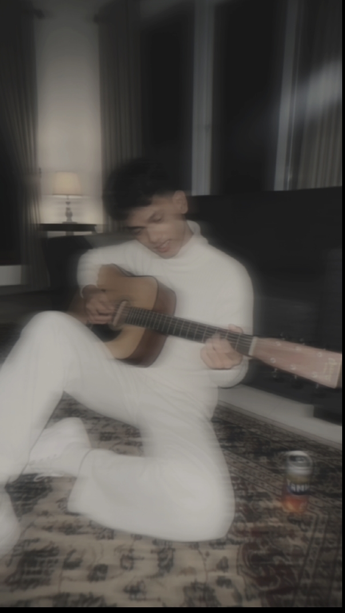

Saya seorang spesialis dalam membangun antarmuka web yang interaktif, futuristik, dan berfokus pada pengalaman pengguna yang luar biasa.

Berikut adalah teknologi dan perangkat yang biasa saya gunakan dalam menyusun ekosistem web modern:
Antarmuka web interaktif dengan sistem navigasi hamburger menu dan simulasi login.
Lihat DetailAplikasi pemetaan interaktif menggunakan Leaflet.js untuk melacak kapal dan penerbangan real-time.
Lihat DetailTertarik bekerja sama atau ingin berdiskusi? Jangan ragu untuk menyapa melalui kontak di bawah ini!